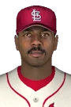

Historical player · SS
Garry Templeton
CompareNow bench coach, Arizona Diamondbacks
- Position
- SS
- Bats/Throws
- S/R
- Height/Weight
- 5'11", 190 lb
- Born
- Mar 24, 1956 in Lockney, TX
- Major-league seasons
- 1976–1991 (16)
- Main franchise
 San Diego Padres
San Diego Padres- Status
- Retired
| Year | Team | Lg | G | PA | AB | R | H | 2B | 3B | HR | RBI | SB | CS | BB | K | AVG | OBP | SLG | OPS | WAR |
|---|---|---|---|---|---|---|---|---|---|---|---|---|---|---|---|---|---|---|---|---|
| 1976 |  St. Louis Cardinals St. Louis Cardinals | NL | 53 | 225 | 213 | 32 | 62 | 8 | 2 | 1 | 17 | 11 | 7 | 7 | 33 | .291 | .314 | .362 | .675 | 0.9 |
| 1977 | St. Louis Cardinals | NL | 153 | 644 | 621 | 94 | 200 | 19 | 18 | 8 | 79 | 28 | 24 | 15 | 70 | .322 | .336 | .449 | .786 | 3.4 |
| 1978 | St. Louis Cardinals | NL | 155 | 675 | 647 | 82 | 181 | 31 | 13 | 2 | 47 | 34 | 11 | 22 | 87 | .280 | .303 | .377 | .680 | 3.0 |
| 1979 | St. Louis Cardinals | NL | 154 | 696 | 672 | 105 | 211 | 32 | 19 | 9 | 62 | 26 | 10 | 18 | 91 | .314 | .331 | .458 | .790 | 4.7 |
| 1980 | St. Louis Cardinals | NL | 118 | 524 | 504 | 83 | 161 | 19 | 9 | 4 | 43 | 31 | 15 | 18 | 43 | .319 | .342 | .417 | .759 | 3.2 |
| 1981 | St. Louis Cardinals | NL | 80 | 350 | 333 | 47 | 96 | 16 | 8 | 1 | 33 | 8 | 12 | 14 | 55 | .288 | .315 | .393 | .709 | 1.3 |
| 1982 | San Diego Padres | NL | 141 | 601 | 563 | 76 | 139 | 25 | 8 | 6 | 64 | 27 | 16 | 26 | 82 | .247 | .279 | .352 | .631 | 0.7 |
| 1983 | San Diego Padres | NL | 126 | 490 | 460 | 39 | 121 | 20 | 2 | 3 | 40 | 16 | 6 | 21 | 57 | .263 | .294 | .335 | .629 | 0.7 |
| 1984 | San Diego Padres | NL | 148 | 535 | 493 | 40 | 127 | 19 | 3 | 2 | 35 | 8 | 3 | 39 | 81 | .258 | .312 | .320 | .633 | 0.4 |
| 1985 | San Diego Padres | NL | 148 | 596 | 546 | 63 | 154 | 30 | 2 | 6 | 55 | 16 | 6 | 41 | 88 | .282 | .332 | .377 | .709 | 1.8 |
| 1986 | San Diego Padres | NL | 147 | 549 | 510 | 42 | 126 | 21 | 2 | 2 | 44 | 10 | 5 | 35 | 86 | .247 | .296 | .308 | .603 | -0.4 |
| 1987 | San Diego Padres | NL | 148 | 561 | 510 | 42 | 113 | 13 | 5 | 5 | 48 | 14 | 3 | 42 | 92 | .222 | .281 | .296 | .577 | -0.8 |
| 1988 | San Diego Padres | NL | 110 | 392 | 362 | 35 | 90 | 15 | 7 | 3 | 36 | 8 | 2 | 20 | 50 | .249 | .286 | .354 | .639 | 0.8 |
| 1989 | San Diego Padres | NL | 142 | 536 | 506 | 43 | 129 | 26 | 3 | 6 | 40 | 1 | 3 | 23 | 80 | .255 | .286 | .354 | .639 | 0.9 |
| 1990 | San Diego Padres | NL | 144 | 541 | 505 | 45 | 125 | 25 | 3 | 9 | 59 | 1 | 4 | 24 | 59 | .248 | .280 | .362 | .642 | 0.5 |
| 1991 | San Diego Padres | NL | 32 | 59 | 57 | 5 | 11 | 1 | 1 | 1 | 6 | 0 | 1 | 1 | 9 | .193 | .203 | .298 | .502 | -0.3 |
| 1991 |  New York Mets New York Mets | NL | 80 | 234 | 219 | 20 | 50 | 9 | 1 | 2 | 20 | 3 | 1 | 9 | 29 | .228 | .257 | .306 | .562 | -0.5 |
| 1991 total | 112 | 293 | 276 | 25 | 61 | 10 | 2 | 3 | 26 | 3 | 2 | 10 | 38 | .221 | .246 | .304 | .550 | -0.7 | ||
| Career | 16 seasons | 2079 | 8208 | 7721 | 893 | 2096 | 329 | 106 | 70 | 728 | 242 | 129 | 375 | 1092 | .271 | .304 | .369 | .673 | 20.4 |
| Year | Team | Pos | G | GS | Inn | TC | PO | A | E | DP | Fld% |
|---|---|---|---|---|---|---|---|---|---|---|---|
| 1976 | St. Louis Cardinals | SS | 53 | 51 | 442.2 | 307 | 111 | 172 | 24 | 41 | .922 |
| 1977 | St. Louis Cardinals | SS | 151 | 146 | 1264.0 | 770 | 285 | 453 | 32 | 98 | .958 |
| 1978 | St. Louis Cardinals | SS | 155 | 153 | 1353.2 | 848 | 285 | 523 | 40 | 108 | .953 |
| 1979 | St. Louis Cardinals | SS | 150 | 150 | 1314.2 | 851 | 292 | 525 | 34 | 102 | .960 |
| 1980 | St. Louis Cardinals | SS | 115 | 114 | 991.0 | 703 | 223 | 451 | 29 | 85 | .959 |
| 1981 | St. Louis Cardinals | SS | 76 | 76 | 657.2 | 450 | 160 | 272 | 18 | 54 | .960 |
| 1982 | San Diego Padres | SS | 136 | 135 | 1204.2 | 668 | 220 | 422 | 26 | 70 | .961 |
| 1983 | San Diego Padres | SS | 123 | 122 | 1039.1 | 598 | 219 | 355 | 24 | 66 | .960 |
| 1984 | San Diego Padres | SS | 146 | 143 | 1226.2 | 658 | 225 | 407 | 26 | 79 | .960 |
| 1985 | San Diego Padres | SS | 148 | 148 | 1276.2 | 728 | 245 | 460 | 23 | 96 | .968 |
| 1986 | San Diego Padres | SS | 144 | 134 | 1190.1 | 585 | 207 | 358 | 20 | 60 | .966 |
| 1987 | San Diego Padres | SS | 146 | 141 | 1243.1 | 720 | 253 | 447 | 20 | 77 | .972 |
| 1988 | San Diego Padres | 3B | 2 | 0 | 2.2 | 2 | 2 | 0 | 0 | 0 | 1.000 |
| 1988 | San Diego Padres | SS | 105 | 99 | 898.2 | 500 | 168 | 316 | 16 | 62 | .968 |
| 1989 | San Diego Padres | SS | 140 | 136 | 1193.0 | 661 | 232 | 409 | 20 | 74 | .970 |
| 1990 | San Diego Padres | SS | 135 | 132 | 1167.2 | 607 | 214 | 367 | 26 | 74 | .957 |
| 1991 | New York Mets | 1B | 25 | 18 | 168.0 | 165 | 152 | 12 | 1 | 9 | .994 |
| 1991 | San Diego Padres | 3B | 15 | 8 | 87.2 | 20 | 2 | 17 | 1 | 2 | .950 |
| 1991 | New York Mets | 3B | 2 | 2 | 17.0 | 10 | 2 | 8 | 0 | 1 | 1.000 |
| 1991 | San Diego Padres | SS | 1 | 0 | 4.0 | 1 | 1 | 0 | 0 | 0 | 1.000 |
| 1991 | New York Mets | SS | 40 | 30 | 279.0 | 163 | 53 | 104 | 6 | 18 | .963 |
| Career | SS | 1964 | 1910 | 16747.0 | 9818 | 3393 | 6041 | 384 | 1164 | .961 | |
| Career | 1B | 25 | 18 | 168.0 | 165 | 152 | 12 | 1 | 9 | .994 | |
| Career | 3B | 19 | 10 | 107.1 | 32 | 6 | 25 | 1 | 3 | .969 |
Awards
All-Star selections 3
League-leader finishes top 10; 4 times first
| Year | League | Category | Place | Value |
|---|---|---|---|---|
| 1977 | NL | Hits | 3rd | 200 |
| 1977 | NL | Total bases | 10th | 279 |
| 1977 | NL | Triples | 1st | 18 |
| 1977 | NL | Batting average | 2nd | .322 |
| 1978 | NL | Hits | 7th | 181 |
| 1978 | NL | Triples | 1st | 13 |
| 1978 | NL | Stolen bases | 8th | 34 |
| 1979 | NL | Hits | 1st | 211 |
| 1979 | NL | Total bases | 7th | 308 |
| 1979 | NL | Triples | 1st | 19 |
| 1979 | NL | Runs | 6th | 105 |
| 1979 | NL | Batting average | 6th | .314 |
| 1980 | NL | Triples | 7th | 9 |
| 1980 | NL | Batting average | 3rd | .319 |
| 1981 | NL | Triples | 4th | 8 |
| 1982 | NL | Triples | 5th | 8 |
Seasons before 2002 are real MLB history from the OOTP export, mapped by OOTP onto this league's 30 original franchises (club names are as they were in that season). 2002 is this universe. Player names are as the export stores them (apart from a few renamed in this universe since this dump, such as Babe Ruth): OOTP gives some historical players generated names (the 586-homer career is filed under “Legendre Robinson”), and the site keeps them. Every player links to a page: 2002 players to their season pages, everyone else to a historical career page.